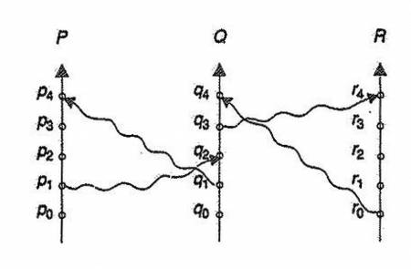

Torna alla pagina di Sistemi Operativi
:: Appunti 2.0 ::
Coordinamento distribuito
Ordinamento degli eventi
A differenza di un sistema centralizzato che ha un'unica memoria centrale e un unico orologio di sistema, in un sistema distribuito diventa estremamente complesso definire l'ordine con cui sono avvenuti due eventi. Dato però che la relazione "accaduto prima" è cruciale per molte applicazioni (ad esempio per l'allocazione delle risorse), vedremo come estenderla anche a questi sistemi.
La relazione accaduto prima
La relazione "accaduto prima" può essere definita come segue:
- se A e B sono eventi dello stesso processo e A è accaduto prima di B, allora A→B
- se A è l'evento di trasmissione di un messaggio in un processo e B è l'evento di ricezione dello stesso messaggio da parte di un altro processo, allora A→B
- se A→B e B→C, allora A→C
Due osservazioni:
- la relazione non è riflessiva
- se due eventi non sono in relazione tra loro, allora sono concorrenti e non si influenzeranno a vicenda. E viceversa
E' possibile rappresentare il tutto con un diagramma spazio-temporale, con gli assi che rappresentano i processi e il tempo, i circoli sono gli eventi e le frecce indicano le relazioni.

Implementazione
Per stabilire quale tra due eventi è accaduto prima è necessario un orologio comune o più orologi sincronizzati tra loro, dispositivi che in un sistema distribuito sono difficilmente disponibili. La soluzione è attribuire ad ogni evento una marca di tempo (timestamp) che consenta il seguente ordinamento globale: se A→B allora il timestamp di A è minore di quello di B.
Nel sistema distribuito si definisce inoltre per ogni processo un orologio logico che ordina i propri eventi con un incremento monotono, mentre per processi diversi che comunicano tra loro applica un avanzamento forzato quando un processo riceve un messaggio la cui marca di tempo è più grande del valore del proprio orologio logico.
Mutua esclusione
Come implementare la mutua esclusione in un sistema distribuito? Di seguito considereremo per semplicità un sistema con n processi, ognuno residente su un unico processore.
Metodo centralizzato
Con il metodo centralizzato si sceglie un processo come coordinatore dell'accesso alla sezione critica. Quando un processo vuole accedervi invia prima una richiesta al coordinatore; questi controlla che la risorsa sia disponibile nel qual caso invia una risposta (che è già implicitamente un permesso), altrimenti lo mette in una coda possibilmente implementata come FCFS (così da evitare starvation). Una volta che il processo termina l'utilizzo della sezione critica invia un messaggio di rilascio al coordinatore, che automaticamente seleziona il primo processo della coda e gli invia una risposta accordandogli l'accesso.
Se il coordinatore crasha, un altro processo verrà eletto al suo posto.
Le prestazioni sono limitate, o per dirla testualmente alla Piuri, "fanno schifo".
Metodo completamente distribuito
Se si desidera distribuire nell'intero sistema la possibilità di assumere decisioni, la soluzione diventa più complicata. Il funzionamento è il seguente:
- quando P vuole entrare in sezione critica genera una marca di tempo ed invia una richiesta di accesso a tutti i processi
- quando un processo Q riceve tale richiesta, può comportarsi in tre modi diversi:
- ritarda la risposta se è in sezione critica
- risponde immediatamente se non intende entrare in sezione critica
- se desidera entrare nella propria sezione critica ma non vi è entrato, confronta la propria marca di tempo con quella di P; se la sua è più grande allora risponde immediatamente, altrimenti ritarda la risposta per entrare prima
Ricordiamo che un processo può entrare nella propria sezione critica quando ha ricevuto un messaggio di risposta da tutti gli altri processi del sistema. In questo modo si ottiene la mutua esclusione garantendo al contempo l'assenza di stalli e starvation. L'aspetto negativo di questa tecnica è che i processi devono conoscere l'identità di tutti gli altri presenti nel sistema, e se uno di questi fallisce fallisce l'intera opera di coordinamento.
Questo protocollo è particolarmente adatto a insiemi piccoli e stabili di processi cooperanti.
Il metodo del passaggio di token
I processi vengono organizzati logicamente in una struttura ad anello e viene fatto circolare tra loro un token, ovvero un messaggio speciale che autorizza il proprietario temporaneo ad entrare nella sezione critica. Essendo unico il token viene garantita la mutua esclusione.
Per un corretto funzionamento bisogna fare in modo che il token non venga perso e che venga sempre mantenuta la struttura ad anello logico.
Atomicità
Una transazione atomica è un insieme di operazioni che devono essere eseguite in modo atomico, cioè o tutte o nessuna. In un sistema distribuito è garantita da un coordinatore della transazione che è responsabile dell'invio, della suddivisione in più parti da distribuire ai vari host partecipanti, del coordinamento e infine della sua terminazione.
Il protocollo di commit a due fasi e la gestione dei guasti nel protocollo 2PC
(da Base di Dati Complementi)
Nel protocollo di commit a due fasi abbiamo due attori: il coordinatore della transazione (TM, Transaction Manager) e gli host partecipanti (RM, Resource Manager).
Prima fase del protocollo:
- Il TM manda un messaggio
prepare a tutti gli RM e imposta un timeout indicando il massimo tempo allocato al completamento della prima fase
- gli RM in stato affidabile scrivono nel loro log il record
ready e trasmettono al TM il messaggio ready, che indica la scelta di partecipare al protocollo
- gli RM in stato non affidabile mandano un messaggio
noready
- il TM raccoglie i messaggi di risposta
- se riceve un messaggio positivo da tutti gli RM, scrive un record
global commit nel log e si prosegue con la seconda fase
- se uno o più dei messaggi ricevuti è negativo o non tutti i messaggi sono ricevuti entro il timeout, il TM scrive un record
global abort nel log e termina il protocollo
Seconda fase del protocollo:
- il TM trasmette la sua decisione globale a tutti gli RM. Imposta poi un timeout.
- gli RM che sono in uno stato
ready ricevono la decisione, scrivono il record relativo (commit o abort) nel loro log e mandano un acknowledgement (ack) al TM. Poi eseguono il commit/abort
- il TM raccoglie tutti gli ack dagli RM coinvolti nella seconda fase. Se il timeout scade, il TM stabilisce un altro timeout e ripete la trasmissione a tutti gli RM dai quali non ha ricevuto ack
- quando tutti gli ack sono arrivati, il TM scrive il record
complete nel suo log
Questo protocollo unito al mantenimento di un file di log assicura una buona tolleranza ai guasti delle macchine e della rete, rendendo vita facile anche ai protocolli di ripristino.
Controllo della concorrenza
Il controllo della concorrenza in un ambiente distribuito è garantito da un gestore delle transazioni, che oltre a controllarne l'esecuzione (sia in locale che in globale) mantiene anche un file di log per il recupero del sistema dopo il verificarsi di guasti.
Protocolli bloccanti
I protocolli bloccanti a due fasi possono essere usati in un ambiente distribuito facendo particolare attenzione nella scelta implementativa del gestore del blocco.
Schema non replicato
Se nessun dato è replicato nel sistema allora l'implementazione più semplice prevede un unico responsabile locale del lock per macchina, il cui compito è bloccare o sbloccare le risorse in base alle transazioni che le richiedono. Il tutto viene gestito attraverso messaggi: due per la richiesta di blocco ed uno per la risposta.
La gestione dello stallo è complicata perché le richieste non avvengono su un unico host; abbiamo però una maggiore tolleranza ai guasti dato che se il coordinatore crasha è impedito l'accesso alle sole risorse di cui era diretto responsabile.
Metodo del coordinatore singolo
A differenza di prima abbiamo un unico coordinatore centralizzato del lock, quindi tutte le richieste (realizzate come nello schema non replicato) passano da lui.
L'implementazione è semplice così come la gestione degli stalli, ma si hanno prestazioni limitate (il coordinatore rappresenta un collo di bottiglia) e bassa tolleranza ai guasti (se salta lui addio).
Protocollo di lock a maggioranza
In questo caso è prevista una replica dei dati nel sistema ed un responsabile dei lock per ogni sito. Quando una transazione vuole un certo dato invia la richiesta ad almeno la metà più uno degli host che lo detengono; gli viene accordato l'accesso solo se riceve il consenso della maggioranza dei coordinatori (ognuno dei quali risponde in modo indipendente dagli altri).
Il vantaggio di questa tecnica è che tratta i dati in modo decentralizzato, a fronte però di maggiori difficoltà implementative (più messaggi da gestire) e una più complessa e specifica gestione degli stalli.
Protocollo polarizzato
Il protocollo polarizzato fa una distinzione tra richieste di blocchi condivisi e esclusivi, favorendo i primi. Un blocco condiviso viene infatti rapidamente gestito in locale, mentre quello esclusivo con il sistema del protocollo a maggioranza.
Comporta un minor sovraccarico per gli accessi in lettura, ma condivide con l'altro i sovraccarichi in scrittura e i problemi di stallo (dato che le macchine non sono organizzate in modo simmetrico).
Copia primaria
Tra tutte le repliche ne viene eletta una come copia primaria ed è su essa che avvengono le richieste. E' semplice da implementare e non si ha sovraccarico, ma si ha meno probabilità di trovarla disponibile.
Marca di tempo
Esistono due modi per generare marche di tempo uniche:
- con il metodo centralizzato vengono distribuite da un singolo coordinatore, che può utilizzare un contatore logico o il suo orologio locale
- con il metodo distribuito ogni sito genera un'unica marca di tempo locale usando un contatore logico o l'orologio locale, mentre quella globale si ottiene concatenando quella locale con l'id del sito (entrambi unici). Poiché un sito potrebbe generare marche di tempo locali più velocemente degli altri, bisogna fare in modo che la loro produzione sia ragionevolmente omogenea. Si può a tal fine utilizzare un orologio logico che viene forzato ad aggiornarsi (con un incremento unitario) ogni volta che riceve un messaggio da qualche altra transazione.
Gestione delle situazioni di stallo
Prevenzione delle situazioni di stallo
Gli algoritmi che vedremo sono un'estensione di quelli già visti per i sistemi centralizzati.
Il primo prevede un ordinamento globale delle risorse del sistema distribuito mediante id unici progressivi, impedendo poi a un processo di ottenere una risorsa se è già in possesso di un'altra con identificativo maggiore. E' piuttosto semplice da realizzare e comporta sovraccarichi minimi.
Il secondo è una generalizzazione dell'algoritmo del banchiere, anch'esso semplice ma che può portare ad alti sovraccarichi dato che il banchiere rappresenta un collo di bottiglia. Non è tra le soluzioni preferibili.
Un terzo sistema è quello delle marche di tempo con rilascio anticipato delle risorse, che assegna un numero univoco di priorità a ogni processo e funziona come segue: se P possiede la risorsa e Q ha priorità maggiore, allora P (su cui viene effettuato un rollback) rilascia la risorsa che passa all'altro. Questa soluzione impedisce la formazione di stalli anche a livello distribuito, ma può portare a starvation, evitabile con due tecniche che utilizzano le marche di tempo:
- schema wait and die: quando un processo richiede una risorsa posseduta da un altro, viene messo in attesa solo se ha una marca di tempo minore; altrimenti viene annullato
- schema wound-wait: quando un processo richiede una risorsa posseduta da un altro, viene messo in attesa solo se ha marca di tempo maggiore; altrimenti si sottrae la risorsa al processo che la possiede attualmente
Rilevamento delle situazioni di stallo
L'algoritmo di rilevamento degli stalli prevede l'utilizzo dei grafi di attesa, che descrivono l'allocazione delle risorse: se c'è un ciclo nel grafo si ha uno stallo tra i processi coinvolti.
In un sistema distribuito ogni sito mantiene un proprio grafo di attesa locale, nel quale però l'assenza di cicli non implica automaticamente l'assenza di deadlock: è infatti nell'unione di tutti i grafi locali che bisogna verificarne l'esistenza.
Ma come possono essere organizzati questi grafi?
Metodo centralizzato
Col metodo centralizzato il grafo di attesa globale viene costruito e mantenuto aggiornato da un unico coordinatore centralizzato. A causa dei ritardi dovuti alle transazioni nel sistema distribuito bisogna distinguere tra grafo reale (utopico) e costruito. Quest'ultimo, pur essendo un'approssimazione di quello reale, deve almeno garantire che se esiste uno stallo allora deve essere segnalato, e viceversa se uno stallo viene segnalato allora deve effettivamente esistere.
L'aggiornamento del grafo può avvenire in seguito all'inserimento o alla rimozione di un arco (la macchina avvisa il coordinatore con un messaggio), oppure dopo un certo numero di cambiamenti o ancora a discrezione del coordinatore.
L' algoritmo di ricerca dei cicli consiste nella trasmissione dei grafi locali da parte di tutte le macchine e successiva costruzione del grafo globale da parte del coordinatore, che avvia su esso la ricerca vera e proria. Se riscontra un ciclo seleziona un processo vittima su cui effettua un rollback per uscire dal deadlock.
E' importante segnalare che si potrebbero avere dei rollback inutili a causa di falsi cicli, dovuti ai ritardi legati ai tempi di trasmissione, o perché in seguito alla scelta della vittima lo stallo smette di sussitere per cause indipendenti dall'algoritmo di ricerca.
Metodo completamente distribuito
Questo algoritmo fa in modo che la responsabilità del rilevamento degli stalli venga condivisa da tutti i siti, ognuno dei quali ha un controllore che costruisce un proprio grafo di attesa parziale rispetto a quello globale. Ad ognuno di questi grafi viene aggiunto un nodo Pex che indica l'attesa per risorse appartenenti ad altre macchine. Se esiste un ciclo che non coinvolge Pex allora c'è sicuramente uno stallo, se invece lo coinvolge bisogna contattare quella macchina per verificarne l'effettiva esistenza.
Il problema di questo sistema è che il rilevamento contemporaneo di cicli in grafi di attesa locali provoca un sovraccarico di gestione e messaggi ridondanti. Una tecnica per ridurlo è assegnare a ogni processo un id, e se una macchina scopre uno stallo che coinvolge Pex si comporta così:
- se il processo prima di Pex nel ciclo ha id minore di quello successivo, invia il messaggio di rilevamento alle altre macchine
- altrimenti se ne lava le mani e lascia ad altri il compito di rilevarlo e gestirlo
Algoritmi di elezione del coordinatore
Abbiamo visto come molti algoritmi distribuiti abbiano bisogno di un coordinatore perché siano assicurate un certo numero di funzioni. Se uno di questi viene meno esistono alcuni algoritmi di elezione del coordinatore, che presuppongono che ad ogni processo sia associato un numero di priorità: il più alto tra quelli attivi viene eletto.
Algoritmo del bullo
Se un processo invia una richiesta al coordinatore e non riceve risposta, dopo un certo intervallo di tempo suppone che sia guasta e cerca di eleggere sé stesso. La prima cosa che fa è inviare un messaggio di inizio elezione a tutti i processi con priorità più alta della sua, dopodiché si mette in attesa. Se riceve una risposta con l'identificatore del nuovo coordinatore, ne prende atto e registra l'informazione, altrimenti riavvia l'algoritmo. Se invece non riceve alcuna risposta, si autoelegge e informa tutti i processi del suo nuovo ruolo.
Algoritmo dell'anello
Si basa sul fatto che i collegamenti sono unidirezionali e utilizza una lista attiva per ogni processo. Quando P si accorge che il coordinatore non funziona genera una nuova lista attiva vuota, invia un messaggio di elezione col proprio numero al suo vicino e scrive la sua priorità nella lista. Un processo che riceve questo messaggio:
- se non è contenuto nella lista aggiunge il proprio numero nella sua lista attiva e inoltra il messaggio
- altrimenti significa che la lista contiene già tutti i processi attivi del sistema, dunque è sufficiente controllare qual è quello a priorità maggiore ed eleggerlo coordinatore
Torna alla pagina di Sistemi Operativi